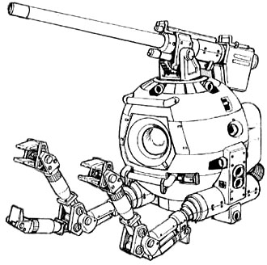

| Ball |
|
|  | |
General and Technical Data |
|
|
Model number: RB-79 Unit type: combat space pod Armament: 180mm recoilless cannon |
|
| Technical and Historical Notes | |
|
One of the chief machines utilized in colony construction is the SP-04W construction pod. The spherical hull is equipped with two arms and various assembly and repair gear, and is frequently seen at work along a colony's exterior.
Given the Federation's penchant for finding unusual weapons platforms, it wasn't long before they took the humble worker pod up for a design of their own. The RB-79 "Ball" as it is affectionately called is exactly that: an armed ball. The two manipulator arms were kept from the original construction pod design. A thin armor plating has been added across the hull, designed to give the Ball at least some rudimentary protection from enemy fire. As a primary weapon, the Ball is equipped with a single 180mm recoiless cannon on a rotating base. Its rate of fire and accuracy leave something to be desired, but it is at least powerful enough to inflict significant damage against Zeon mobile suits. Though originally intended to be their own attack units, the Ball's terrible speed and maneuverability had them quickly pulled back to act as point-defense units for Federation warships, freeing up otherwise engaged Saberfish fighters or GM mobile suits to fight the enemy. |
 RPG quick stats sheet
RPG quick stats sheet